Essential Cell Biology: An introducton to the Molecular Biology of the Cell
Bruce Alberts, Martin Raff
0815320450
A new entry-level survey of cell biology that makes teaching and learning easier than ever beforeSaves work for teachers — motivates students
Now a new introductory text explains cell biology at a level that is easy to grasp for students with a minimal knowledge of biology. The detailed, easy-to-follow text provides students with important background information and the basics necessary to understand cell biology. Teachers can spend less time explaining fundamentals and can focus on more sophisticated concepts. In addition, a profusion of detailed step-by-step full-color diagrams, electron micrographs and photographs reveal and clarify important principles and processes.
Written by the authors of a renowned classic
This new volume is the work of the same exceptional team who wrote the groundbreaking and universally acclaimed text Molecular Biology of the Cell, now in its Third Edition. The brand-new Essential Cell Biology was written in response to many professors who expressed a need for an introductory textbook for undergraduates that was not as difficult as texts for advanced undergraduate and graduate students. In Essential Cell Biology, early chapters review basic concepts in chemistry and biochemistry to provide the necessary understanding of the essential processes and mechanisms covered later in the text. The full-color schematics have been meticulously constructed specifically for students taking a basic course.
— Problems and answers complement the text and stimulate the student's curiosity.
— Quick questions within each chapter enable students to instantly review what they have just read.
— End-of-chapter self-tests of more challenging questions letstudents gauge their grasp of the material and whet their appetite for more information.
— Easy-to-understand panels illuminate the principles of microscopy, the composition of biological macromolecules, the basis of hydrophobicity, the glycolytic pathway, principles of genetics, and many more topics.
— Lavish full-color art work and many color photographs and electron micrographs enliven and illustrate the text.
— A detailed glossary helps students master the specialized vocabulary of modern biology.
An easy-to-grasp introduction to cell biology
The new text has been carefully geared to introductory students, without any sacrifice of scientific rigor. The book's conceptual approach, in which the essential facts are presented in their biological context, is ideal for engaging and motivating students new to molecular and cell biology. The book is written especially for undergraduates in biological sciences, but its content can be easily understood and absorbed by advanced high-school students who need a basic introduction to the essential topics in modern biology. Here are some of the highlights of the coverage:
— A superb chapter on proteins takes students step by step from the basic construction of protein molecules to the construction of the protein machines that drive cellular processes.
— Coverage of genetic variation and recombinant DNA technology offers students an easy-to-understand introduction to the techniques at the frontiers of biological research.
— The text is enlivened and enriched throughout with examples of practical applications of the basic biological principles presented.
— Explanations of cell biological processes also show at themolecular level how cancers can arise when the processes go out of control.
— Fully up-to-date chapters on intracellular membrane traffic, the cytoskeleton, the cell cycle and signal transduction provide a state-of-the-art perspective on these cutting-edge fields at an introductory level.
— All the illustrations are available on CD-ROM — enabling instructors to put together individualized presentations in just a few minutes.
— A Test Bank offers multiple-choice and short-answer questions on each chapter.
— Slide set
— Transparencies
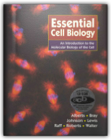
Matter in Equilibrium: Statistical Mechanics and Thermodynamics includes CD-ROM
R. Stephen Berry, Stuart A. Rice, John Ross
0195147499
Originally Part II of Physical Chemistry, Second Edition, and now published as its own volume, Matter in Equilibrium: Statistical Mechanics and Thermodynamics simultaneously develops the statistical molecular theory and the classical thermodynamic theory of the bulk properties of matter in a mutually reinforcing fashion. Despite presenting both a microscopic and macroscopic approach, this sophisticated text offers a rigorous treatment of classical thermodynamics and allows professors to separate the two theories if desired. Packed with tables, graphs, and figures, it describes the equilibrium properties of bulk matter and develops the tools needed to study gases, solids, liquids, phase transformations, solutions of nonelectrolytes, and solutions of electrolytes. The book makes extensive use of computer simulations of molecular behavior and, where appropriate, uses experimental data to illustrate concepts and principles. Ideal for advanced undergraduate and beginning graduate level courses, Matter in Equilibrium broadens and challenges student perspectives while offering valuable information to researchers.
Nucleic Acids in Chemistry and Biology
G. Michael Blackburn, Michael J. Gait
0199635331
Since the discovery of the DNA double helix in 1953, nucleic acids have formed the central theme of much of contemporary molecular science. Nowhere is this more apparent than in the increasing efforts to determine the DNA sequence of the human genome and the development of new diagnostics of genetic disease. Recent sophistication of nucleic acids synthesis has been key to the establishment of the biotechnology industry and our improving knowledge of nucleic acid structures and interactions is noticeably influencing the design of novel drugs.This second and completely revised edition draws on the expertise of the same international group of authors to set the basics of the nucleic acids in the context of the expanding horizons set by modern structural biology, RNA enzymology, drug discovery and biotechnology.
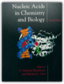
Introduction To Algorithms
Thomas H. Cormen, Charles E. Leiserson, Ronald L. Rivest, Ronald Rivest
0070131430
Written by top researchers, this text blends theory and practice. It covers the modern topics of parallel algorithms, concurrency and recurrency. A McGraw-Hill/MIT Press collaboration, the text is designed for both the instructor and the student. It offers a flexible organization with self-contained chapters, and it provides an introduction to the necessary mathematical analysis. Introduction to Algorithms contains sections that gently introduce mathematical techniques for students who may need help. This material takes students at an elementary level of mathematical sophistication and raises them to a level allowing them to solve algorithmic problems. Simple, easy-to-do exercises, as well as more thoughtful, step-by-step case-generated problems are included. The book features standard analytic notation and includes trimmed-down, easy-to-read pseudocode.
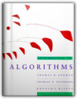
Java in a Nutshell
David Flanagan
1565924878
This bestselling quick reference contains an accelerated introduction to the Java language and its key APIs, so seasoned programmers can start writing Java code right away. The third edition of Java in a Nutshell covers Java 1.2 and Java 1.3 beta and includes: A description of the syntax of the Java language, written in a tight, concise style, that can serve as both a fast-paced tutorial and a language reference.An explanation of the object-oriented features of Java that does not assume any prior object-oriented programming experience.An overview of the essential Java APIs that shows how to perform common tasks, such as string manipulation, input/output, and thread handling, with the classes and interfaces that comprise the Java 2 platform.Documentation for the Java development tools shipped with Sun's Java SDK.This book also includes O'Reilly's classic-style, quick-reference material for all of the classes in the essential Java packages, including java.lang, java.io, java.beans java.math, java.net, java.security, java.text, java.util, and javax.crypto. This reference material covers all of the new classes in Java 1.2 and 1.3. Once you've learned Java, you'll keep this book next to your keyboard for handy reference while you program.
This book is part of the two-volume set of quick references that every Java programmer needs. It is an essential companion to Java Foundation Classes in a Nutshell, which covers the graphics and graphical user interface APIs in the Java 2 platform, including Swing, AWT, and Java 2D. A third volume, Java Enterprise in a Nutshell, focuses on the Java Enterprise APIs and is of interest to programmers working on server-side or enterprise Java applications.

Calculus Two: Linear and Nonlinear Functions
Francis J. Flanigan, Jerry L. Kazdan, David L. Frank, Bert E. Fristedt, Lawrence F. Gray
0387973885
Calculus and linear algebra are two dominant themes in contemporary mathematics and its applications. The aim of this book is to introduce linear algebra in an intuitive geometric setting as the study of linear maps and to use these simpler linear functions to study more complicated nonlinear functions. In this way, many of the ideas, techniques, and formulas in the calculus of several variables are clarified and understood in a more conceptual way. After using this text a student should be well prepared for subsequent advanced courses in both algebra and linear differential equations as well as the many applications where linearity and its interplay with nonlinearity are significant. This second edition has been revised to clarify the concepts. Many exercises and illustrations have been included to make the text more usable for students.
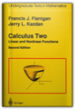
Real Analysis
Norman B. Haaser, Joseph A. Sullivan, Mathematics
0486665097
Clear, accessible text for a 1st course in abstract analysis, suitable for undergraduates with a good background in the calculus of functions of 1 and several variables. Sets and relations, real number system and linear spaces, normed spaces, normed linear spaces, Lebesque integral, approximation theory, Banach fixed-point theorem, Stieltjes integrals, more. Includes problems.
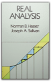
Jurriaan Hage, Marco T. Morazán
3642242758
This book constitutes the thoroughly refereed post-conference proceedings of the 22nd International Symposium on Implementation and Applications of Functional Languages, IFL 2010, held in Alphen aan den Rijn, The Netherlands, in September 2010. The 13 revised full papers presented were carefully reviewed and were selected from 31 submissions. The IFL symposia bring together researchers and practitioners that are actively engaged in the implementation and the use of functional and function based programming languages. Every year IFL provides a venue for the presentation and discussion of new ideas and concepts, of work in progress, and of publication-ripe results.
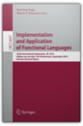
Readings in Computer Architecture
Mark D. Hill, Norman P. Jouppi, Gurindar S. Sohi
1558605398
Thanks to the continued exponential advances in semiconductor design and the demands of evolving and emerging application domains, the field of computer architecture has never been more dynamic. This, the first major book of computer architecture readings in over two decades, captures this dynamism and reveals Computer Architecture's rich history of practice.This is much more than a simple collection of papers. The editors have carefully selected the most influential primary sources in specific areas of inquiry that, taken together, present the critical issues of the entire discipline. These include issues in technology, implementation, economics, evaluation methods, instruction set design, instruction level parallelism, dataflow/multithreading, memory systems, input/output systems, single-instruction multiple data parallelism, and multiple-instruction multiple data parallelism. In addition, you'll find the editors' thoughtful, focused introductions to each area, providing the context and background necessary for understanding the significance and lasting impact of these papers.
The primary sources and insightful commentary contained in this book provide foundational knowledge for computer architects as well as for those who design supporting system software and compilers. This is an excellent resource for practitioners, instructors, students, and researchers.
* Includes more than 50 influential papers spanning four decades of computer architecture research and development
* Selected, edited, and introduced by three eminent researchers and educators in the field.
* Demonstrates the value of primary sources by showing how forgotten design ideas of the past are often rediscovered when new needs or constraints emerge.
* Accompanied by an annually updated companion Web site with links and references to recently published papers, providing a forum for the editors to comment on how recent work continues or breaks with previous work in the field.
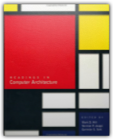
Computability and Complexity Theory
Steven Homer, Alan L. Selman
0387950559
Intended for use in an introductory graduate course in theoretical computer science, this text contains material that should be core knowledge in the theory of computation for all graduates in computer science. It is self-contained and is best suited for a one semester course. The text starts with classical computability theory which forms the basis for complexity theory. This has the pedagogical advantage that students learn a qualitative subject before advancing to a quantitative one. Since this is a graduate course, students should have some knowledge of such topics as automata theory, formal languages, computability theory, or complexity theory.
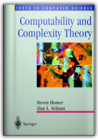
Chemical Kinetics and Reaction Dynamics
Paul L. Houston
0072435372
Chemical Kinetics and Reaction Dynamics is a modern textbook for advanced courses. Houston emphasizes the essential principles of kinetics and dynamics through relevant examples and current research, providing students with a clear, basic understanding.
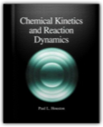
Principal Component Analysis
I.T. Jolliffe
0387954422
The first edition of this book was the first comprehensive text written solely on principal component analysis. The second edition updates and substantially expands the original version, and is once again the definitive text on the subject. It includes core material, current research and a wide range of applications. Its length is nearly double that of the first edition.
C Programming Language
Brian W. Kernighan, Dennis M. Ritchie
0131103628
The authors present the complete guide to ANSI standard C language programming. Written by the developers of C, this new version helps readers keep up with the finalized ANSI standard for C while showing how to take advantage of C's rich set of operators, economy of expression, improved control flow, and data structures. The 2/E has been completely rewritten with additional examples and problem sets to clarify the implementation of difficult language constructs. For years, C programmers have let K&R guide them to building well-structured and efficient programs. Now this same help is available to those working with ANSI compilers. Includes detailed coverage of the C language plus the official C language reference manual for at-a-glance help with syntax notation, declarations, ANSI changes, scope rules, and the list goes on and on.
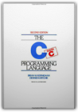
Introductory Real Analysis
A. N. Kolmogorov, S. V. Fomin
0486612260
Self-contained and comprehensive, this elementary introduction to real and functional analysis is readily accessible to those with background in advanced calculus. It covers basic concepts and introductory principles in set theory, metric spaces, topological and linear spaces, linear functionals and linear operators, and much more. 350 problems. 1970 edition.
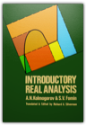
Introductory Quantum Mechanics
Richard Liboff
0805387145
Careful and detailed explanations of challenging concepts in Introductory Quantum Mechanics, Fourth Edition, and comprehensive and up-to-date coverage, continue to set the standard in physics education. In the new edition of this best-selling quantum mechanics book, a new chapter on the revolutionary topic of of quantum computing (not currently covered in any other book at this level) and thorough updates to the rest of the book bring it up to date.
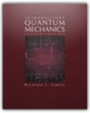
Physical Chemistry: A Molecular Approach
Donald A. McQuarrie, John D. Simon
0935702997
As the first modern physical chemistry textbook to cover quantum mechanics before thermodynamics and kinetics, this book provides a contemporary approach to the study of physical chemistry. By beginning with quantum chemistry, students will learn the fundamental principles upon which all modern physical chemistry is built. The text includes a special set of "MathChapters" to review and summarize the mathematical tools required to master the material Thermodynamics is simultaneously taught from a bulk and microscopic viewpoint that enables the student to understand how bulk properties of materials are related to the properties of individual constituent molecules. This new text includes a variety of modern research topics in physical chemistry as well as hundreds of worked problems and examples.
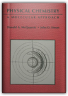
Ohanian's Physics/Study Guide
Van E. Neie, Peter D. Riley
0393957527
Principles of Physics is a textbook for a one year algebra-based introduction physics course. The book is intended for students in the life sciences, the premedical curriculum, the earth and environmental sciences, and the liberal arts.Since for many students this is their first encounter with physics, I introduce new concepts by qualitative and intuitive discussions whenever possible. And to motivate students and to maintain their enthusiasm, I have drawn on examples from sports, biology, medicine, and everyday life, chosen to match the background and special interests of the students.
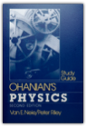
Principles of Program Analysis
Flemming Nielson, Hanne R. Nielson, Chris Hankin
3540654100
Program analysis utilizes static techniques for computing reliable information about the dynamic behavior of programs. Applications include compilers (for code improvement), software validation (for detecting errors) and transformations between data representation (for solving problems such as Y2K). This book is unique in providing an overview of the four major approaches to program analysis: data flow analysis, constraint-based analysis, abstract interpretation, and type and effect systems. The presentation illustrates the extensive similarities between the approaches, helping readers to choose the best one to utilize.
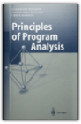
Physics, Volume 2 Expanded
Hans C. Ohanian
0393957861
Ideal for peer-learning environments, the Student Activity Workbook offers group workshop activities for all the core concepts in the text, with an emphasis on developing problem-solving skills.
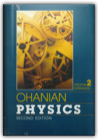
Physics, Volume 1
Hans C. Ohanian
0393957489
Ideal for peer-learning environments, the Student Activity Workbook offers group workshop activities for all the core concepts in the text, with an emphasis on developing problem-solving skills.
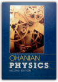
Types and Programming Languages
Benjamin C. Pierce
0262162091
A type system is a syntactic method for automatically checking the absence of certain erroneous behaviors by classifying program phrases according to the kinds of values they compute. The study of type systems—and of programming languages from a type-theoretic perspective — -has important applications in software engineering, language design, high-performance compilers, and security.This text provides a comprehensive introduction both to type systems in computer science and to the basic theory of programming languages. The approach is pragmatic and operational; each new concept is motivated by programming examples and the more theoretical sections are driven by the needs of implementations. Each chapter is accompanied by numerous exercises and solutions, as well as a running implementation, available via the Web. Dependencies between chapters are explicitly identified, allowing readers to choose a variety of paths through the material.The core topics include the untyped lambda-calculus, simple type systems, type reconstruction, universal and existential polymorphism, subtyping, bounded quantification, recursive types, kinds, and type operators. Extended case studies develop a variety of approaches to modeling the features of object-oriented languages.
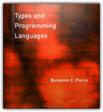
Advanced Topics in Types and Programming Languages
Benjamin C. Pierce
0262162288
The study of type systems for programming languages now touches many areas of computer science, from language design and implementation to software engineering, network security, databases, and analysis of concurrent and distributed systems. This book offers accessible introductions to key ideas in the field, with contributions by experts on each topic.The topics covered include precise type analyses, which extend simple type systems to give them a better grip on the run time behavior of systems; type systems for low-level languages; applications of types to reasoning about computer programs; type theory as a framework for the design of sophisticated module systems; and advanced techniques in ML-style type inference.Advanced Topics in Types and Programming Languages builds on Benjamin Pierce's Types and Programming Languages (MIT Press, 2002); most of the chapters should be accessible to readers familiar with basic notations and techniques of operational semantics and type systems — the material covered in the first half of the earlier book.Advanced Topics in Types and Programming Languages can be used in the classroom and as a resource for professionals. Most chapters include exercises, ranging in difficulty from quick comprehension checks to challenging extensions, many with solutions.
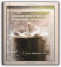
Discrete Mathematics and Its Applications
Kenneth H. Rosen
0072899050
This text is designed for the sophomore/junior level introduction to discrete mathematics taken by students preparing for future coursework in areas such as math, computer science and engineering. Rosen has become a bestseller largely due to how effectively it addresses the main portion of the discrete market, which is typically characterized as the mid to upper level in rigor. The strength of Rosen's approach has been the effective balance of theory with relevant applications, as well as the overall comprehensive nature of the topic coverage.
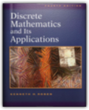
Principles of Mathematical Analysis
Walter Rudin
007054235X
The third edition of this well known text continues to provide a solid foundation in mathematical analysis for undergraduate and first-year graduate students. The text begins with a discussion of the real number system as a complete ordered field. (Dedekind's construction is now treated in an appendix to Chapter I.) The topological background needed for the development of convergence, continuity, differentiation and integration is provided in Chapter 2. There is a new section on the gamma function, and many new and interesting exercises are included.This text is part of the Walter Rudin Student Series in Advanced Mathematics.
Calculus
Michael Spivak
0914098896
THIS IS OUT OF PRINT!!!!!You should stop telling people that you will send copies when available.
Only the new 0914098911 will be available, starting July16.
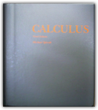
An Introduction to Error Analysis: The Study of Uncertainties in Physical Measurements
John R. Taylor
093570275X
This best-selling text by John Taylor, now released in its second edition, introduces the study of uncertainties to lower division science students. Assuming no prior knowledge, the author introduces error analysis through the use of familiar examples ranging from carpentry to well-known historic experiments. Pertinent worked examples, simple exercises throughout the text, and numerous chapter-ending problems combine to make the book ideal for use in physics, chemistry, and engineering lab courses. The first edition of this book has been translated into six languages.
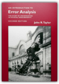
Linear Algebra: An Introduction to Abstract Mathematics
Robert J. Valenza
0387940995
Based on lectures given at Claremont McKenna College, this text constitutes a substantial, abstract introduction to linear algebra. The presentation emphasizes the structural elements over the computational - for example by connecting matrices to linear transformations from the outset - and prepares the student for further study of abstract mathematics. Uniquely among algebra texts at this level, it introduces group theory early in the discussion, as an example of the rigorous development of informal axiomatic systems.
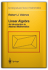
The Formal Semantics of Programming Languages: An Introduction
Glynn Winskel
0262231697
The Formal Semantics of Programming Languages provides the basic mathematical techniques necessary for those who are beginning a study of the semantics and logics of programming languages. These techniques will allow students to invent, formalize, and justify rules with which to reason about a variety of programming languages. Although the treatment is elementary, several of the topics covered are drawn from recent research, including the vital area of concurency. The book contains many exercises ranging from simple to miniprojects.Starting with basic set theory, structural operational semantics is introduced as a way to define the meaning of programming languages along with associated proof techniques. Denotational and axiomatic semantics are illustrated on a simple language of while-programs, and fall proofs are given of the equivalence of the operational and denotational semantics and soundness and relative completeness of the axiomatic semantics. A proof of Godel's incompleteness theorem, which emphasizes the impossibility of achieving a fully complete axiomatic semantics, is included. It is supported by an appendix providing an introduction to the theory of computability based on while-programs.
Following a presentation of domain theory, the semantics and methods of proof for several functional languages are treated. The simplest language is that of recursion equations with both call-by-value and call-by-name evaluation. This work is extended to lan guages with higher and recursive types, including a treatment of the eager and lazy lambda-calculi. Throughout, the relationship between denotational and operational semantics is stressed, and the proofs of the correspondence between the operation and denotational semantics are provided. The treatment of recursive types - one of the more advanced parts of the book - relies on the use of information systems to represent domains. The book concludes with a chapter on parallel programming languages, accompanied by a discussion of methods for specifying and verifying nondeterministic and parallel programs.
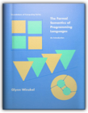
Chemistry
Steven S. Zumdahl
0669324620
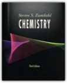